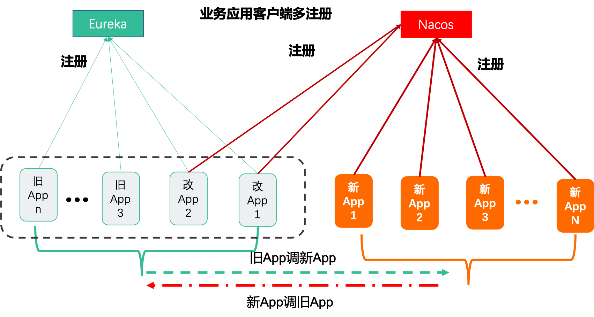
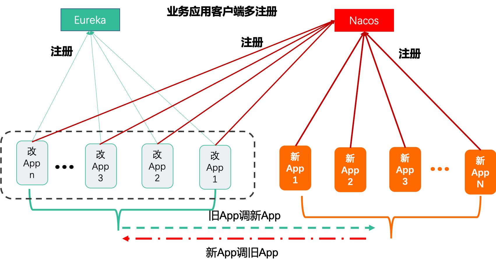
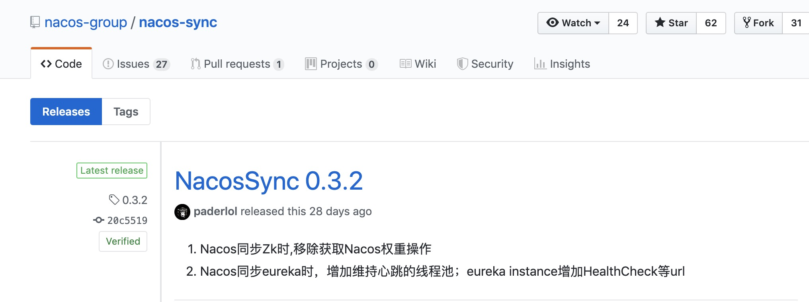
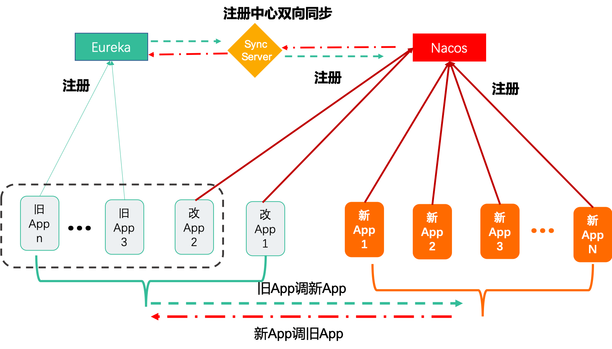
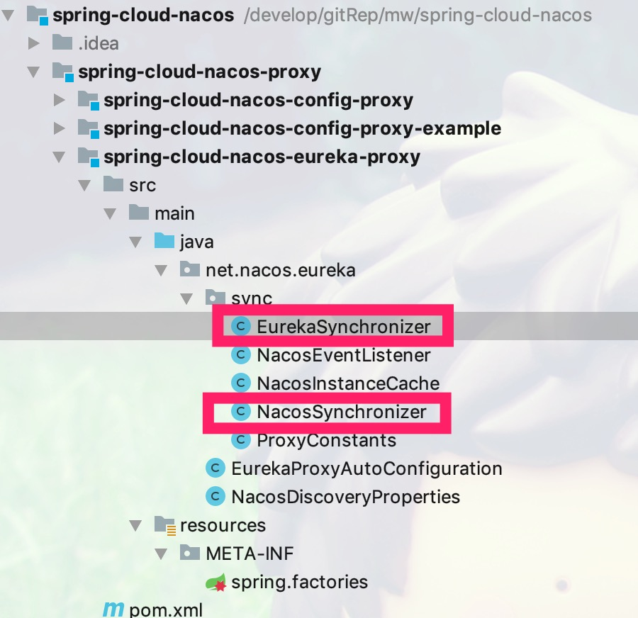
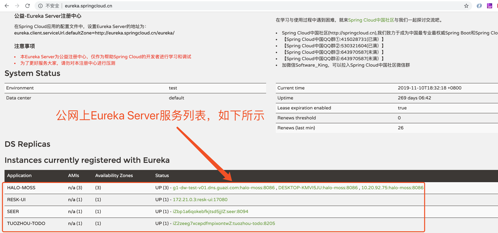
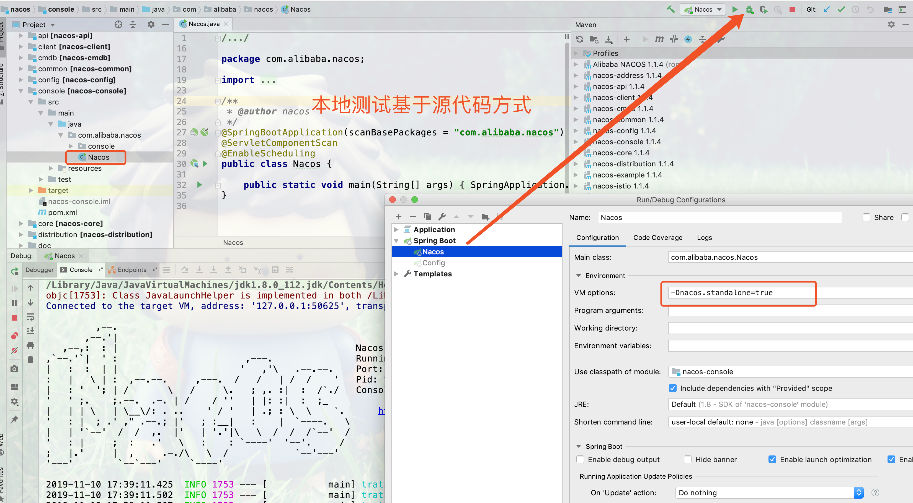
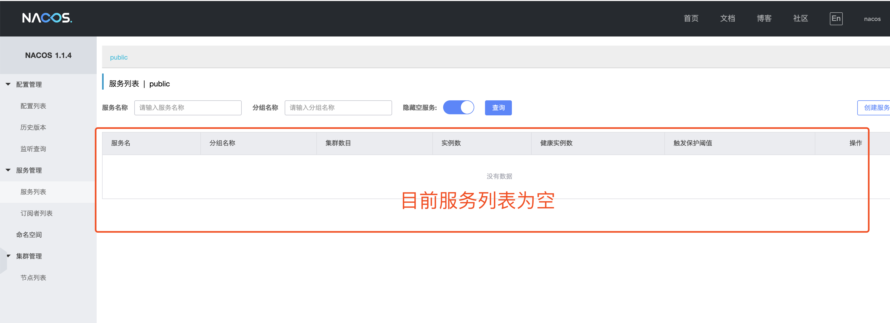
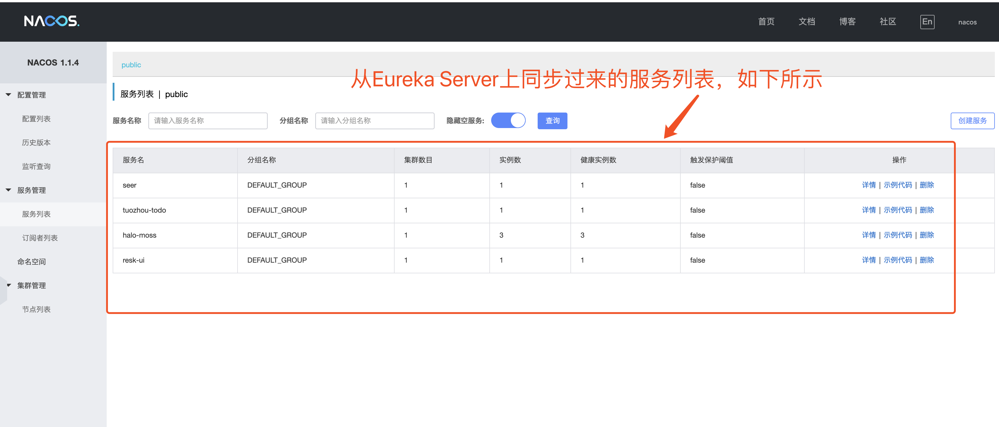
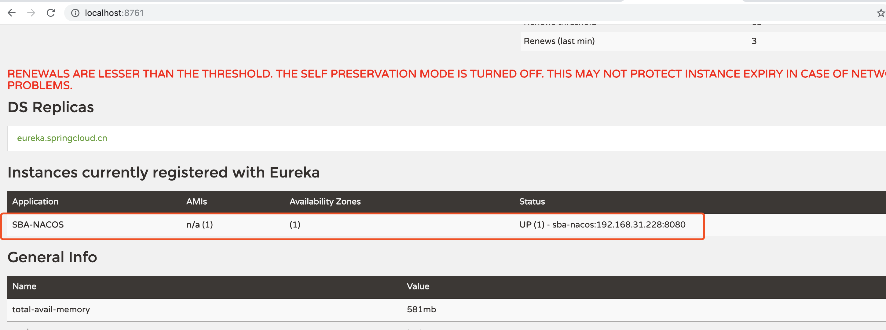

1.背景
Nacos与Eureka相比，Nacos的优点非常明显，当然首选Nacos作为注册中心。本文主要介绍如何从Eureka无缝平滑迁移到Nacos注册中心，业务方应用改动最小，业务应用改造一次完成迁移。
2.方案设计
2.1 业务应用多注册到Nacos和Eureka
Spring Cloud应用默认不支持启动时双向注册，但是阿里商业版上云edas-sc-migration-starter组件支持。可以采用如下的方式引入依赖实现多注册和订阅。
<!-- https://mvnrepository.com/artifact/com.alibaba.edas/edas-sc-migration-starter -->
<dependency>
<groupId>com.alibaba.edas</groupId>
<artifactId>edas-sc-migration-starter</artifactId>
<version>1.0.2</version>
</dependency>
也就是引入对应的组件，当应用启动的时候同时向Eureka和Nacos实现双向注册。更多的实现细节和使用细节本文将不进行展开。
 如上图所示，如果只把旧应用只改一部分，会出现只有改造的应用能调到新应用。未改造的应用会出现调不到新应用的情况。即，需要如下图所示的方式，旧应用全部升级改造为双注册到注册中心，才可以支持。
 >但是旧应用无法保证同一时刻全部升级改造为同时注册，因此该方案论证失败。
2.2 Nacos Sync方案
Nacos Sync 是一个支持多种注册中心的同步组件，基于 SpringBoot 开发框架，数据层采用 Spring Data JPA，遵循了标准的 JPA 访问规范，支持多种数据源存储，默认使用 Hibernate 实现，更加方便的支持表的自动创建更新。但目前最新版本是如下图所示。 
跟Nacos Sync项目的负责人沟通过，目前也支持Nacos与Eureka之间双向同步，至于怎么用优缺点怎么样本文将不进行展开。
2.3 注册中心服务端双向同步
2.3.1 方案设计
设计思路是注册中心服务端进行双向同步，做到微服务端完全无侵入，可以随业务迭代逐步完成升级和迁移。改造Eureka Server，Eureka Server引入同步组件实现Nacos和Eureka之间实现双向同步，如下图所示：

2.3.2 迁移步骤
迁移步骤如下:
1.部署Nacos Server集群用于服务注册与发现
2.在线动态扩容Eureka Server，替换其中的1-2两台Eureka Server。
3.逐渐改造旧应用，只需将新旧应用注册到Nacos上
4.等旧应用全部改造完毕，下线Eureka Server即可。
这样方案的优点，如下:
1.新应用直接注册到Nacos上，不需要同时注册到Eureka和Nacos上
2.旧应用直接改造(引入相关starter即可)注册到Nacos上即可，不需要同时注册到Nacos和Eureka上
3.迁移成本很低，旧应用只需改造一次(所谓的改造即引入新的Starter，修改配置)，等全部旧应用迁移完毕，直接下线Eureka Server。
3.迁移落地
3.1 组件开发
开发一个Spring Boot Starter,加入到Eureka Server或Nacos Server中可以实现双向注册。
3.2 spring-cloud-nacos组件介绍
spring-cloud-nacos主要由
何鹰和瞿礼贡献，Nacos Plus在Nacos上做加法，Nacos client默认是支持安全控制的可以参考阿里云商业版配置中心ACM集成方式 https://github.com/alibaba/spring-cloud-alibaba/wiki/ACM 以及 spring cloud alibaba 配置项 https://github.com/alibaba/spring-cloud-alibaba/blob/master/spring-cloud-alibaba-examples/nacos-example/nacos-config-example/readme-zh.md 但是开源的Nacos并不含有安全控制模块，在Nacos plus里我们新增了兼容默认Nacos client的安全控制功能。
核心代码主要是NacosSynchronizer.java和EurekaSynchronizer.java,请自行阅读。 github地址:https://github.com/inacos/spring-cloud-nacos 
4.实现迁移落地
按如下，迁移步骤进行迁移。具体细节在本文省略。 1.部署Nacos Server集群用于服务注册与发现 2.在线动态扩容一台Eureka Server 3.逐渐改造旧应用，只需将新旧应用注册到Nacos上 4.等旧应用全部改造完毕，下线Eureka Server即可。
下面将在本地进行测试说明，用到的演示说明列表如下所示:
| 服务 | 说明 |
|---|---|
| Eureka注册中心(http://eureka.springcloud.cn/) | 模拟生产上的Eureka注册中心 |
| 本地基于源码方式启动一个Nacos实例 | 模拟生产上新建的Nacos |
| 同步服务(本地基于Eureka Server扩展启动的同步服务） | 模拟生产上启动了一个Nacos与Eureka之间双向同步的服务 |
| 本地启动一个服务注册到(http://eureka.springcloud.cn/） | 验证从eureka同步服务到nacos |
| 本地启动一个服务注册到Nacos | 验证从nacos同步服务到Eureka上 |
4.1 模拟生产上的注册中心
Spring Cloud中国社区公网上有个Eureka注册中心，地址为:http://eureka.springcloud.cn/ 
4.2 基于源代码方式启动Nacos
基于Nacos的最新Master代码，本地IDEA设置环境变量-Dnacos.standalone=true，启动Nacos，如下所示:

2.打开浏览器访问 http://localhost:8848/nacos/index.html,输入用户名和密码(均为nacos)登录。 
4.3 启动同步服务测试
4.3.1 搭建同步服务
- 示例工程如spring-cloud-nacos-eureka-proxy-example所示,在一个Eureka Server中引入如下的pom依赖:
<dependencies>
<dependency>
<groupId>org.springframework.cloud</groupId>
<artifactId>spring-cloud-starter-netflix-eureka-server</artifactId>
</dependency>
<dependency>
<groupId>org.springframework.boot</groupId>
<artifactId>spring-boot-starter-actuator</artifactId>
</dependency>
<!-- 引入Nacos与Eureka之间同步的Starter
<dependency>
<groupId>net.nacos</groupId>
<artifactId>spring-cloud-nacos-eureka-proxy</artifactId>
<version>1.0.0</version>
</dependency>
<dependency>
<groupId>com.alibaba.nacos</groupId>
<artifactId>nacos-client</artifactId>
<version>1.1.3</version>
</dependency>
</dependencies>
在application.properties配置如下信息
server.port=8761 spring.application.name=eureka-proxy spring.cloud.nacos.discovery.serverAddr=localhost:8848 eureka.client.serviceUrl.defaultZone=http://eureka.springcloud.cn/eureka/ #eureka.client.fetchRegistry=false #eureka.client.registerWithEureka=false eureka.instance.preferIpAddress=true eureka.server.enable-self-preservation=false
4.3.2 启动服务
启动同步服务，访问Nacos页面发现已经把Eureka上面的服务同步到Nacos,如下所示:

说明，因为是从公网Eureka上同步过来的服务列表，部分服务不在本地。因此Naocs将会从服务列表中踢除。但不影响验证功能。
4.3.3 验证从Eureka同步到Nacos
启动一个moss-sample-2.1.x的服务只注册到 http://eureka.springcloud.cn/，立即同步到Nacos上，可以自行验证。
4.3.4 验证从Nacos同步到Eureka
启动一个服务一个服务只注册到Nacos上，发现立即同步到 http://eureka.springcloud.cn/上，如下图所示: 
5.总结
本文从迁移的方案入手，进行论证如何将注册中心从Eureka迁移到Nacos。如何在迁移的过程中有任何疑问，欢迎沟通交流。